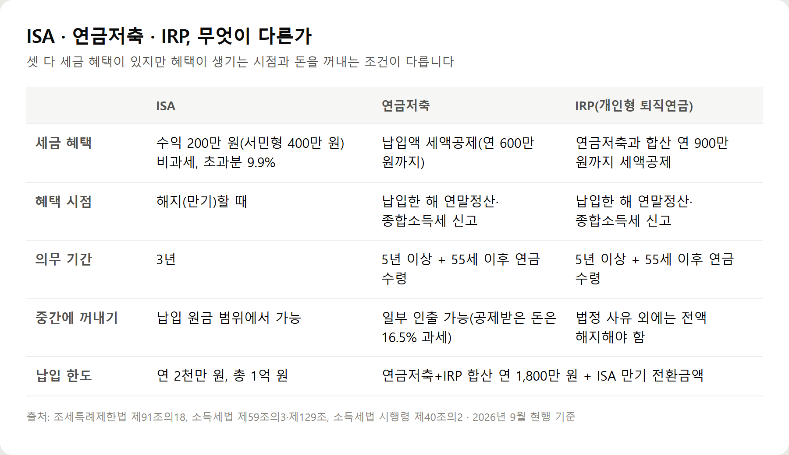
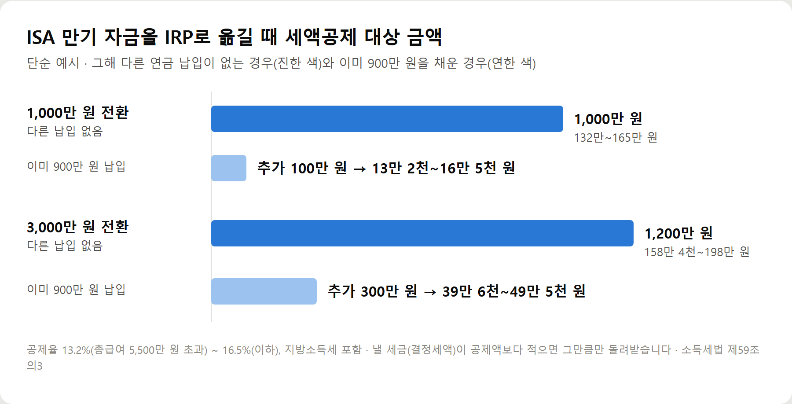

<meta charset="utf-8">
<title>ISA 만기 연금 이전 FAQ 10가지와 결정 전 체크리스트 — 나의 투자 그리고 행복한 여행</title>
<meta name="description" content="ISA 만기 자금을 60일 안에 연금저축·IRP로 옮기면 전환금액 10%(최대 300만 원) 세액공제 한도가 추가됩니다. 1,000만·3,000만 원 예시와 FAQ 10가지, 체크리스트.">
<meta name="viewport" content="width=device-width, initial-scale=1">
<link rel="canonical" href="https://worldtraveler1.tistory.com/">
<link rel="preconnect" href="https://fonts.googleapis.com">
<link rel="preconnect" href="https://fonts.gstatic.com" crossorigin>
<link rel="stylesheet" href="https://fonts.googleapis.com/css2?family=Hahmlet:wght@400;600;800&family=IBM+Plex+Mono:wght@400;500&family=IBM+Plex+Sans+KR:wght@300;400;500;600&display=swap">

<style>
  :root{
    --paper:#F2EEE6;--surface:#FAF8F3;--surface-2:#E7E1D5;
    --ink:#191510;--ink-2:#4A4235;--ink-3:#7D7364;
    --line:#D6CEBF;--line-soft:#E4DDD0;--accent:#B06A15;--accent-bright:#C2761A;
    --up:#E5484D;--down:#3B82F6;
    --f-display:"Hahmlet",'Nanum Myeongjo',"Apple SD Gothic Neo",serif;
    --f-body:"IBM Plex Sans KR","Apple SD Gothic Neo","Malgun Gothic",sans-serif;
    --f-mono:"IBM Plex Mono","SFMono-Regular",Consolas,monospace;
    --pad:clamp(20px,5vw,64px);
  }
  @media (prefers-color-scheme:dark){
    :root:not([data-theme="light"]){
      --paper:#0B1120;--surface:#121A2C;--surface-2:#1A2439;
      --ink:#E9EEF7;--ink-2:#A9B5C9;--ink-3:#72809A;
      --line:#26314A;--line-soft:#1D2739;--accent:#E8A33D;--accent-bright:#F0B45C;
    }
  }
  *{box-sizing:border-box;}
  body{margin:0;background:var(--paper);color:var(--ink);font-family:var(--f-body);
    font-weight:300;font-size:1rem;line-height:1.75;-webkit-font-smoothing:antialiased;}
  a{color:inherit;}
  img{max-width:100%;height:auto;}
  .wrap{max-width:760px;margin:0 auto;padding-inline:var(--pad);}
  .nav{position:sticky;top:0;z-index:20;background:color-mix(in srgb,var(--paper) 88%,transparent);
    backdrop-filter:saturate(180%) blur(12px);border-bottom:1px solid var(--line);}
  .nav-in{display:flex;align-items:center;justify-content:space-between;height:58px;}
  .brand{font-family:var(--f-display);font-weight:600;font-size:1rem;letter-spacing:-.02em;text-decoration:none;}
  .back{font-family:var(--f-mono);font-size:.72rem;color:var(--ink-3);text-decoration:none;}
  .article{padding-block:clamp(40px,7vw,72px) clamp(56px,9vw,96px);}
  .eyebrow{font-family:var(--f-mono);font-size:.68rem;letter-spacing:.16em;text-transform:uppercase;
    color:var(--accent);margin:0 0 14px;}
  h1{font-family:var(--f-display);font-weight:800;font-size:clamp(1.6rem,4.4vw,2.3rem);
    line-height:1.3;letter-spacing:-.03em;margin:0 0 16px;}
  .byline{font-family:var(--f-mono);font-size:.72rem;color:var(--ink-3);
    padding-bottom:24px;border-bottom:1px solid var(--line);margin-bottom:32px;}
  h2{font-family:var(--f-display);font-weight:600;font-size:1.25rem;letter-spacing:-.02em;margin:42px 0 14px;}
  h3{font-family:var(--f-display);font-weight:600;font-size:1.05rem;letter-spacing:-.02em;
    margin:30px 0 10px;padding-top:14px;border-top:1px solid var(--line-soft);}
  h3 .code{font-family:var(--f-mono);font-size:.7rem;font-weight:400;color:var(--ink-3);margin-left:6px;}
  p{margin:0 0 18px;color:var(--ink-2);}
  ul.checks{margin:0 0 18px;padding-left:20px;color:var(--ink-2);}
  ul.checks li{margin-bottom:8px;font-size:.94rem;}
  table{width:100%;border-collapse:collapse;font-size:.88rem;margin-bottom:8px;}
  th{font-family:var(--f-mono);font-size:.66rem;letter-spacing:.06em;text-transform:uppercase;
    color:var(--ink-3);text-align:right;padding:8px 6px;border-bottom:1px solid var(--line);}
  th:first-child{text-align:left;}
  td{padding:10px 6px;border-bottom:1px solid var(--line-soft);color:var(--ink-2);}
  td.num{font-family:var(--f-mono);text-align:right;font-variant-numeric:tabular-nums;}
  td.up{color:var(--up);} td.down{color:var(--down);}
  .scroll{overflow-x:auto;}
  figure{margin:22px 0;}
  figure img{display:block;border-radius:3px;background:var(--surface-2);}
  figcaption{margin-top:8px;font-family:var(--f-mono);font-size:.68rem;color:var(--ink-3);text-align:center;}
  .note{margin-top:34px;padding:16px 18px;border-left:3px solid var(--accent);
    background:var(--surface);border-radius:0 3px 3px 0;}
  .note p{margin:0;font-size:.85rem;color:var(--ink-3);}
  .foot{border-top:1px solid var(--line);background:var(--surface);padding-block:30px 38px;}
  .foot p{margin:0;font-size:.8rem;color:var(--ink-3);}
</style>

<nav class="nav">
  <div class="wrap nav-in">
    <a class="brand" href="../index.html">나의 투자 그리고 행복한 여행</a>
    <a class="back" href="../index.html#stocks">← 시황으로</a>
  </div>
</nav>

<main class="wrap article">
  <p class="eyebrow">Market</p>
  <h1>ISA 만기 연금 이전 FAQ 10가지와 결정 전 체크리스트</h1>
  <p class="byline">주식 · 2026-09-30 기준</p>

  <p><b>이 포스팅은 쿠팡 파트너스 활동의 일환으로, 이에 따른 일정액의 수수료를 제공받습니다.</b></p>
  <p><b>이 포스팅은 네이버 쇼핑 커넥트 활동의 일환으로, 판매 발생 시 수수료를 제공받습니다.</b></p>
  <p>ISA 만기 자금을 연금저축·IRP로 옮기기 전에 많이 묻는 질문 10가지를 정리했습니다. 2026년 9월 현행 소득세법 기준입니다.</p>
  <h2>5줄 요약</h2>
  <ul class="checks">
    <li>ISA 만기일부터 60일 안에 연금저축·IRP에 넣으면 그해 연금 납입액이 된다</li>
    <li>세액공제 한도 900만 원(연금저축만이면 600만 원)에 전환금액 10%, 최대 300만 원이 더해진다</li>
    <li>공제율은 총급여 5,500만 원 이하 16.5%, 초과 13.2%</li>
    <li>공제받지 않은 전환금액은 꺼낼 때 세금이 없다</li>
    <li>55세 전에 쓸 돈이면 공제분에 16.5%가 붙어 효과가 줄어든다</li>
  </ul>
  <figure><figcaption>ISA·연금저축·IRP 비교 — 세금 혜택, 혜택 시점, 의무 기간, 중도 인출, 납입 한도</figcaption></figure>
  <h2>자주 묻는 질문 10가지</h2>
  <p><b>Q1. ISA 만기 자금은 연금저축과 IRP 중 어디로 옮겨야 하나요?</b> 둘 다 됩니다. IRP는 공제 한도가 넓지만 중도 인출이 제한되고, 연금저축은 한도가 좁지만 일부 인출이 됩니다.</p>
  <p><b>Q2. 60일이 지나면 어떻게 되나요?</b> 연금계좌에 넣을 수는 있지만 ISA 전환금으로 인정되지 않습니다. 추가 한도 300만 원과 별도 납입 한도가 사라집니다.</p>
  <p><b>Q3. 일부만 옮겨도 되나요?</b> 됩니다. 옮긴 금액의 10%가 추가 한도가 됩니다.</p>
  <p><b>Q4. 3,000만 원 넘게 옮기면 공제가 더 늘어나나요?</b> 아닙니다. 추가 한도는 300만 원에서 멈춥니다.</p>
  <p><b>Q5. 연금계좌 연 1,800만 원 한도를 넘게 되나요?</b> 전환금액은 1,800만 원 한도와 별도로 넣을 수 있습니다.</p>
  <p><b>Q6. 공제받은 돈은 언제 세금을 내나요?</b> 꺼낼 때 냅니다. 55세 이후 연금으로 받으면 3.3~5.5%, 그 전에 연금 외로 꺼내면 16.5%입니다.</p>
  <p><b>Q7. 만기 전에 해지한 ISA도 되나요?</b> 가입 3년이 지난 계좌를 연금계좌로 옮기는 경우는 만기로 봅니다. 3년이 안 됐다면 대상이 아닙니다.</p>
  <p><b>Q8. ISA에서 낸 세금은 돌려받나요?</b> 아닙니다. ISA 수익 정산(비과세·9.9%)은 만기 때 끝나고, 연금계좌 세액공제는 그와 별개입니다.</p>
  <p><b>Q9. 소득이 없어도 공제받나요?</b> 세액공제는 낼 세금에서 빼는 방식이라, 결정세액이 없으면 돌려받을 것도 없습니다.</p>
  <p><b>Q10. 두 해에 나눠 넣으면 한도가 두 번 생기나요?</b> 아닙니다. 두 해를 합쳐 300만 원입니다.</p>
  <figure><figcaption>ISA 만기 자금 1,000만 원·3,000만 원을 IRP로 옮길 때 세액공제 대상 금액 (단순 예시)</figcaption></figure>
  <p>위 공제액은 이해를 돕기 위한 <b>단순 예시</b>입니다.</p>
  <div style="text-align:center;margin:30px 0"><a href="https://link.coupang.com/a/hq7nQzcePc" target="_blank" rel="nofollow sponsored noopener" style="display:inline-block;padding:15px 28px;background:#E34948;color:#fff;font-weight:700;font-size:18px;text-decoration:none;border-radius:8px"><b>▶ 쿠팡에서 보기 — 마법의 연금 굴리기 — 연금저축·IRP·ISA 절세 삼총사 (김성일, 에이지21)</b></a></div>
  <h2>결정 전 체크리스트</h2>
  <ul class="checks">
    <li>ISA 만기일(또는 가입 3년 경과일)과 60일 기한 확인</li>
    <li>올해 연금저축·IRP에 이미 넣은 금액 확인</li>
    <li>원천징수영수증에서 총급여와 결정세액 확인</li>
    <li>55세 전에 쓸 가능성 점검</li>
    <li>연금저축·IRP 중 어디로, 얼마씩 넣을지 결정</li>
    <li>2027년 세법 개정 여부 확인 (생산적금융 ISA 전환금 추가 한도는 정부안 단계)</li>
  </ul>
  <p>지출과 저축 흐름을 기록해 두면 네 번째 항목을 판단하기 쉽습니다.</p>
  <div style="text-align:center;margin:30px 0"><a href="https://naver.me/xllxI2HU" target="_blank" rel="nofollow sponsored noopener" style="display:inline-block;padding:15px 28px;background:#E34948;color:#fff;font-weight:700;font-size:18px;text-decoration:none;border-radius:8px"><b>▶ 네이버에서 보기 — 아이비스 포켓 가계부 (돈 관리·예산 관리)</b></a></div>
  <div style="text-align:center;margin:30px 0"><a href="https://danielmoon82.github.io/moon/posts/isa-maturity-2026-09-29.html" target="_blank" rel="nofollow sponsored noopener" style="display:inline-block;padding:15px 28px;background:#E34948;color:#fff;font-weight:700;font-size:18px;text-decoration:none;border-radius:8px"><b>▶ ISA 만기 후 선택지 체크리스트 보기</b></a></div>
  <h2>참고자료</h2>
  <ul class="checks">
    <li>소득세법 제59조의3(연금계좌세액공제) 제1항·제3항·제4항</li>
    <li>소득세법 시행령 제40조의2(연금계좌 등)</li>
    <li>소득세법 제129조(원천징수세율) 제1항 제5호의2</li>
    <li>조세특례제한법 제91조의18(개인종합자산관리계좌에 대한 과세특례)</li>
    <li>국세청 서면-2023-원천-2255 (2024.2.7) — ISA 만기 전환금액의 과세 제외</li>
  </ul>
  <div class="note"><p>이 글은 2026년 9월 30일 기준 현행 소득세법·조세특례제한법을 바탕으로 정리한 일반 정보입니다. 세법은 매년 바뀔 수 있으니 실행 전에 가입한 금융회사나 국세청(126)에 한 번 더 확인하세요. 특정 금융회사나 상품을 권하지 않으며, 세액공제 계산은 이해를 돕기 위한 단순 예시입니다. 실제 환급액은 소득, 다른 공제, 결정세액에 따라 달라집니다.</p></div>
  <p style="font-size:12px;color:#999;line-height:1.6;margin-top:36px">이 포스팅은 쿠팡 파트너스 활동의 일환으로, 이에 따른 일정액의 수수료를 제공받습니다.</p>
  <p style="font-size:12px;color:#999;line-height:1.6;margin-top:36px">이 포스팅은 네이버 쇼핑 커넥트 활동의 일환으로, 판매 발생 시 수수료를 제공받습니다.</p>
</main>

<footer class="foot">
  <div class="wrap"><p>나의 투자 그리고 행복한 여행 · 투자 판단의 참고 자료일 뿐, 매수·매도를 권유하지 않습니다.</p></div>
</footer>
